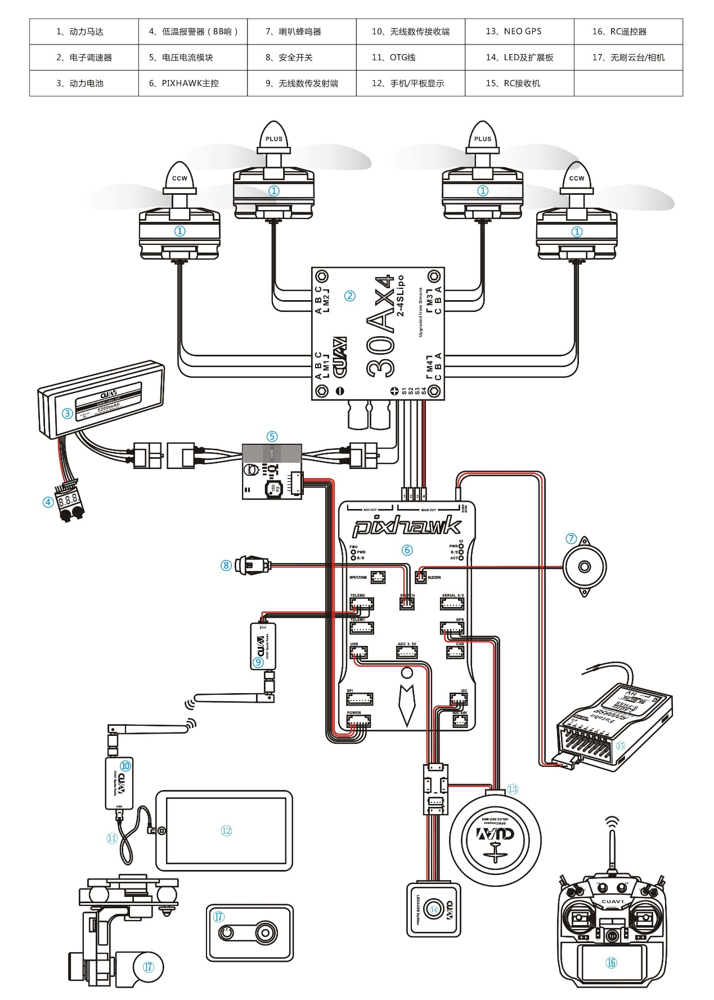
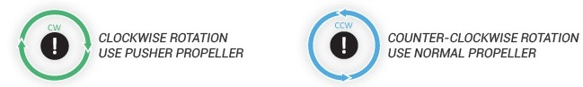
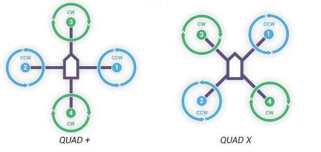
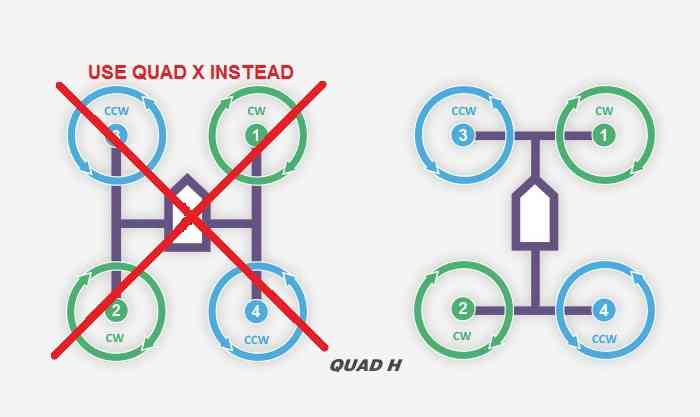
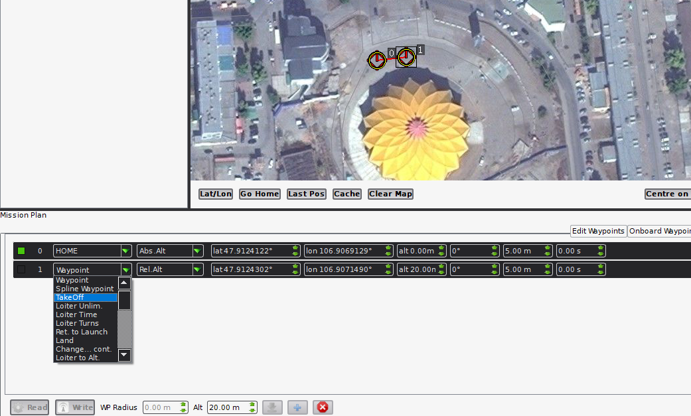

无人机编队
目录
组装一架满足编队需求的飞机
系统需求
无人机
1．使用Pixhawk作为其飞行控制器的无人机。
2．一个微型车载Linux计算机。(例如:树莓派)
3．带有USB适配器的XBee模块。(例如:XBee S1, XBee S2C，等等)
4．(可选)用于调试的USB- ttl适配器(例如FT232, CP2102/CP2104，不使用PL2303) 示例:XBee模块通过USB连接到RPi, RPi通过UART连接到Pixhawk。在Rpi上配置硬件UART，使其运行在921600bps 波特率，与Pixhawk系列的设置一致。(http://ardupilot.org/dev/docs/partner-computers.html)
地面控制站
1．一个Linux计算机。(虚拟机也可以)
2．带有USB适配器的XBee模块。(如XBee S1, XBee S2C等) 通常一个多旋翼组成包括以下硬件（四轴）：

一个四轴飞行器的构成：
四轴机架 X1（必须）
动力马达 X4 （必须）
无刷电子调速器（电调/ESC）X4 （必须）
PixhACK v3 飞控 X1 （必须）
CUAV GPS X1 （必须）
无线数传 (CUAV RADIO/XBEE/XTEND/HACKLINK/WP-LINK） X1对 （必须）
动力电池（必须）
RC遥控器和RC接收机（必须）
无刷云台或者相机（可选）
超声波或者激光传感器（可选）
光流定点传感器（可选）


支持电池类型
使用标配的CUAV IV模块，支持标准2-6V动力电池
IV模块支持2-6V电压、0-60A电流 实时监测
理论上：
需要实时控制能飞行的高度和距离:跟动力续航时间、遥控器或者数传通讯距离有关
自主飞行的高度和距离：跟动力、续航时间有关
PixHack飞控板设备接线定义
每种飞行器的电动机顺序 (里边的数字对应的飞控板的PWM输出端口)
CW 顺时针螺旋桨，绿色图示
CCW逆时针螺旋桨 ，蓝色图示
注意：错误的接线和固件，都会导致起飞就翻车，或者严重往一边倾斜，需要谨慎安装和选择固件 
四轴飞行器：

这种H型机架，应该配置X型模式

软件及嵌入式系统配置
飞控的Telem2接口与RaspberryPI的UART通过3-pin twisted cable连接，RaspberryPI与XBee(本项目采用XBee pro s1)通过USB cable相连。为了使三者能够正常通信，须按照以下步骤进行配置。
RaspberryPI配置参考
1. 树莓派操作系统(注:本项目采用带有图形界面的Ubuntu MATE 16.04 for RaspberryPI 3B，其他的OS配置方法可能不同)
1) SD卡格式化软件SD Formatter 4.0 for SD/SDHC/SDXC
2) 系统镜像文件在Ubuntu mate官网上下载，写入SD卡的软件Win32 Disk Imager
3) 安装操作系统时，勾选开机自动登录。(实现auto-login)
4) 操作系统安装完成以后，下载文本编辑器gedit，方便后续更改配置文件。 sudo apt install gedit
2. 将UART启用为communication interface。
1) sudo gedit /boot/cmdline.text
2) 删除语句‘console=serial0,115200’保存并退出。
3. 修改UART配置，关闭蓝牙（注:mate系统默认蓝牙占用UART）
1) sudo gedit /boot/config.txt
2) 修改init_uart_clock to 16MHz以及init_uart_baudrate to 921600并删除语句前面的注释符号#。（注:飞控Telem2波特率也要相应地修改为921600）
3) 在文本下面添加语句‘core_freq = 250’
4) 在文本下面添加语句‘dtoverlay=pi3-disable-bt’保存并退出
5) sudo systemctl disable hciuart sudo reboot
重启后UART配置完成
4. 安装Python包和Linux包。（注:mate系统自带python 2.7环境）
1) sudo apt install python-pip python-dev sudo pip install pip dronekit xbee numpy gps pyzmq –-upgrade
2) sudo apt install python-serial
5. 开启ssh。
1) sudo apt install openssh-server openssh-client
2) sudo raspi-cofig
3) 出现配置界面，选择‘network’。
4) 选择‘ssh enabled’。
6. 设置开机自启程序。(确保auto-login已实现)
1) sudo gedit /etc/rc.local
2) 在文件中添加 cd /AmazeFly python onboard.py -xbee /dev/ttyUSB –pix /dev/ttyAMA0，保存退出
XBee配置参考
1. 固件烧写
1) 下载工具XCTU
2) 烧写DigiMesh固件(注:推荐8073 – Xbee DiGiMesh 2.4)
2. 将配置文件导入XBee
编队程序解析
1.介绍
欢迎来到AmazeFly项目！AmazeFly是由华北电力大学Amaze团队设计的多无人机测试平台。
AmazeFly的无人机采用Pixhawk和ArduPilot堆栈作为它们的低级飞行控制器，并使用dronekit-python作为高级应用程序控制。到目前为止还没有在Pixhawk和ArduPilot级别进行修改，所以这个项目完全是用Python编写的，运行在Linux环境下(例如Raspberry Pi)。
AMazeFly的无人机使用XBee模块在无人机和地面控制站之间建立高层通信网络。
1.1引用
Quan Yuan,Flydan项目(https://github.com/WeskerYuan/flydan)
1.2许可
AmazeFly项目是Apache 2.0下提供的开源许可。
1.3编码规范
项目完全是按照谷歌Python风格指南的约定用Python 2.7编写的。
2.项目的主要组成部分

gcs.py
用于四轴飞行器集群控制实验的地面控制站脚本。
该脚本在装有Linux 的笔记本电脑上运行。该过程应连接一个高级XBee模块，用于无人机和地面控制站之间的相互通信。XBee模块运行在API2，转义字符模式。在编写时，应使用XBee Pro S1模块（使用DIJI Mesh固件）。有关更多详细信息，请参阅DIJI官方网站和数据表。目前，dronekit API包支持Python 2.7。然而，Ubuntu是更好的选择，因为它使用‘apt’方式来获得分布式包。
onboard.py
这是四轴飞行器集群控制实验的主要脚本。
该脚本在板载配套计算机（例如Raspberry Pi）上运行。与此同时， 控制通过USB或串行连接，按照MAVLink协议执行。无人驾驶飞机和地面控制站之间，应连接高级XBee模块以进行相互通信。XBee模块在API2，转义字符模式下运行。在编写时，应使用XBee Pro S1模块（使用DIJI Mesh固件）。有关更多详细信息，请参阅DIJI官方网站和数据表。目前，dronekit API包支持Python 2.7。然而，Ubuntu是更好的选择，因为它使用‘apt’方式来获得分布式包。
comm.py：
通信的类和函数。
该模块包含用于车辆或车辆和GCS之间通信的类和函数。通常，使用XBee模块让车辆交换信息。
mas.py：
多代理系统控制算法模块。
此模块包含高级代理系统控制的类和函数。这有两种主要的集群控制算法： 2014年COLLMOT的自动推进算法和2016年的RCSNS的分散式模型预测控制。
nav.py：
导航功能。
该模块包含基本的直升机导航功能，这些功能大部分处于GUIDED模式。这些代码是参考Dronekit组编写的导航功能，借鉴修改来的。
shared.py：
跨文件共享的模块。
该模块包含许多不同的全局共享文件功能。它们是常量或预定义对象，具体取决于具体情况。某些属性在程序启动时被加载或实例化，并且在整个运行过程中都认为是常量。详细说明请参阅源代码注释。
util.py：
实用功能。
该模块具有几个有用的功能，便于矢量计算和数据日志记录。大多数函数可以直接使用而不需要其他模块。
missionparser.py：
上传任务。
PWMController.py：
打开或关闭无人机上的LED。
Mission_txt： 存放任务的目录。
3.主要步骤
1.建立一个飞行任务，并将生成的任务TXT文件复制到无人机项目中。
2.运行onboard.py文件。
3.在Linux计算机运行gcs.py文件并控制无人机。
4.如何使用
1.建立一个飞行任务:
软件:APM Planner 2.0
步骤:
(1)运行该软件。
(2)单击“FLIGHT PLAN”。

(3)双击地图上的一个点(编号为0)作为“飞行原点”。
(4)双击地图上的第二点(编号为1)作为“起飞点”。


(5)继续双击一些点作为路径点。

(6)可以在页面下方更改点的高度、精确度和标题。

(7)将生成的TXT文件复制到mission_txt目录中，并按照无人机的序号进行划分。(TXT文件的名称必须是’FIRST .txt’、’SECOND.txt’或’THIRD.txt’。)
参考:http://ardupilot.org/planner2/
2.运行’onboard.py’文件：
‘onboard.py’脚本会在无人机启动时自动运行。
3.通过’gcs.py’控制无人机
(1)打开Linux。
(2)将Xbee模块连接到Linux计算机。
(3)运行终端。
(4)使用’cd’命令切换到项目目录。
(5)通过’ sudo python gcs.py -xbee /dev/ttyUSB0 ‘运行的’gcs.py’。使用’–help’或参考源代码的文档字符串以获得详细的脚本参数。
(6)控制台将开始提示一些信息。相应地输入字母以执行特定的操作。
Keylist:
'x': 0, # switch the mode to auto
'1': 1, # the first mission
'2': 2, # the second mission
'3': 3, # the third mission
'l': 4, # landed
'd': 5, # turn on the LED
'k': 6, # kill thread and restart
正常起飞顺序应该是:
1).按“1”/“2”/“3”，选择第一/第二/第三个任务。
2).按“x”键，切换到自动模式并起飞。
3).按“d”键，打开LED灯。
4).按“l ”键，直接降落无人机。
5).按“k”键，关闭线程并重新启动。